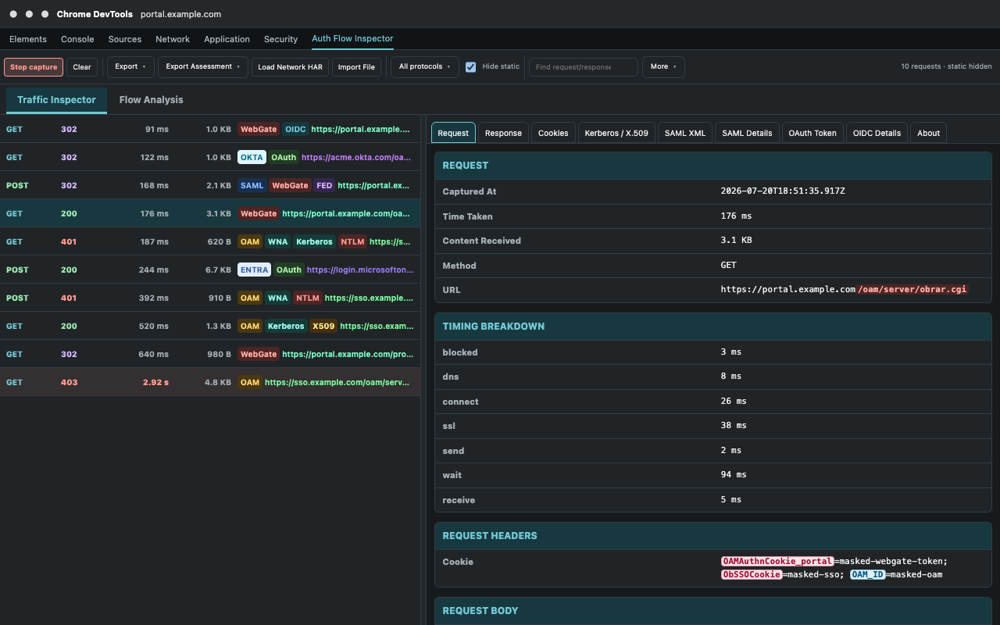

Federation messages
HTTP-POST and Redirect bindings, assertions, conditions, signatures, attributes and embedded certificates.
Chrome and Microsoft Edge DevTools extension
Troubleshoot the browser-visible authentication story, from the first protected-resource request through redirects, credentials, tokens, cookies, callbacks, and the final application return.

Selected-request evidence and complete-flow context
Move from raw browser traffic to a correlated assessment without losing the exact request, response, cookie, token, certificate, or correlation identifier behind each conclusion.
Protocol-aware, vendor-aware
Authentication failures rarely stay inside one product boundary. The inspector keeps evidence from redirects, cookies, headers and payloads in a single sequence.
HTTP-POST and Redirect bindings, assertions, conditions, signatures, attributes and embedded certificates.
Authorization, callbacks, JWT claims, state, nonce, PKCE, issuer, audience and token lifetime signals.
Protected resources, server endpoints, authentication cookies, request IDs, ECIDs and application returns.
Negotiate challenges, browser responses, NTLMSSP/Kerberos token classification, fallback detection, and repeated authorization failures.
Credential-collection endpoints, forwarded certificate headers and browser-visible certificate metadata.
Provider recognition, tenant or organization context, provider errors and log correlation identifiers.
Classify Kerberos versus NTLM fallback from client-token evidence, trace challenge retries and outcomes, or investigate TLS, DNS, proxy, socket, HTTP/2, QUIC and raw events.
A repeatable investigation path
Work live in DevTools, import a HAR or Firefox SAML-tracer JSON export from another environment, or investigate a Chromium NetLog. Export a sanitized report for collaboration or retain full correlation values for controlled diagnostic work.
Read the documentationRecord the active inspected tab, load the Network HAR, or import a saved HAR, Firefox SAML-tracer JSON export, Inspector JSON, or Chromium NetLog trace.
Filter by protocol, hide static resources and search across browser-visible requests and responses.
Use Flow Analysis for authentication transactions or open contextual NetLog investigations for DNS, proxy, TLS, sockets, HTTP and transport failures.
Export sanitized or full-diagnostic Markdown with timelines, correlation keys and server-log guidance.
Privacy by design
Analysis runs locally inside the extension. Captured traffic, cookies, tokens, SAML messages, authentication headers and imported HAR or NetLog data are not sent to the developer or third parties.
The inspector analyzes browser-visible evidence. Server-to-server exchanges, KDC traffic, backend logs and cryptographic trust validation remain outside that scope.
Read the privacy policyOpen source Chromium DevTools extension